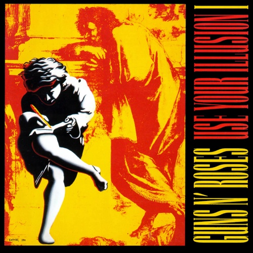

Use You Illusion, Vol.1
Use Your Illusion I is the third studio album by American rock band Guns N' Roses. It was released on September 17, 1991, the same day as its counterpart album Use Your Illusion II. Both albums were released in conjunction with the Use Your Illusion Tour. The album debuted at No. 2 on the Billboard charts, selling 685,000 copies in its first week, behind Use Your Illusion II's first week sales of 770,000. Use Your Illusion I has sold 5,502,000 units in the U.S. as of 2010, according to Nielsen SoundScan. Each of the Use Your Illusion albums have been certified 7× Platinum by the RIAA. It was nominated for a Grammy Award in 1992.